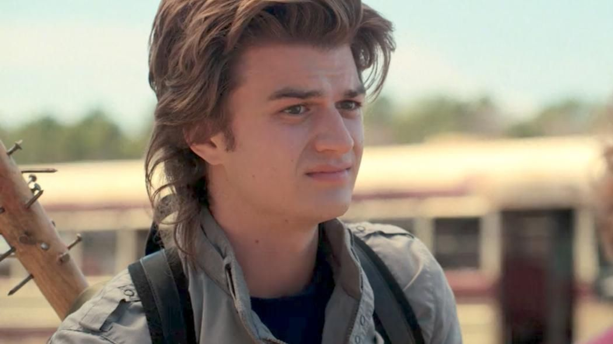

Steve Harrington is a fictional character from the Netflix television show Stranger Things, portrayed by Joe Keery. While starting out as a typical unlikable jock, Steve has grown into a more protecting and caring character as the show has progressed, a development that has received widespread acclaim from critics and fans alike and has led to him becoming one of the show’s most beloved and enduring characters.[1] Initially a part of the recurring cast, Keery was promoted to the main cast in the second season. Steve is a side antagonist turned protagonist at the end of season 1, and one of the main protagonists of season 2, season 3, and season 4.

Steve is initially portrayed as a stereotypical 1980s popular "jock"; he has an antagonistic personality, yet attracts the attention and admiration of many students. Steve is shown to be dating Nancy Wheeler, but after he harasses Jonathan Byers by breaking his camera, Nancy seems to become close to Jonathan. After Steve sees Jonathan and Nancy together, he accosts Jonathan, but is beaten by him in a fight. This causes Steve to see the error of his ways and abandon his former friends. Traveling to the Byers' home to apologize to the pair, he becomes involved in Nancy and Jonathan's fight against the Demogorgon, which they successfully banish. At the conclusion of the season, Nancy buys Jonathan a new camera and Steve continues his relationship with Nancy, while becoming more friendly towards Jonathan after their shared experience.
Steve's relationship with Nancy is stressed, and he breaks up with her after she will not say she loves him. He calls her out after her drunken tirade at a party, during which she called their relationship fake. Steve also finds himself at odds with Billy Hargrove, a new student at the school who seeks to become its tough guy. Steve becomes involved with Mike Wheeler and his friends after Dustin asks him to help find his "pet" D'Artagnan, unaware it is a creature from the Upside Down that his friends call a "Demodog". Steve and Dustin bond over how to talk to girls, and soon Steve also takes him, Mike, Lucas, and Max, Billy's step-sister, under his wing. Steve protects the children as Demodogs start ravaging across Hawkins, giving time for Eleven and Jim Hopper to close the gate to the Upside Down, and for Will Byers to have the Mind Flayer exorcised from his body. He also defends the kids against Billy, and is knocked unconscious before Max is able to disable her brother. Later, during the night of the Snow Ball, a school dance, Steve gives Dustin advice while driving him to the dance, finally acknowledging a caring side to himself.
Now graduated from high school, Steve works at the Scoops Ahoy! ice cream parlor at Starcourt Mall with Robin Buckley (Maya Hawke), a former classmate who teases him frequently. Dustin, having returned from science camp and set up a ham radio tower to talk with his new girlfriend Suzie in Utah, gets Steve's help to translate a Russian radio message he overhears. Robin helps with the translation, indicating a site at the mall, and Lucas' sister Erica (Priah Ferguson) is recruited to sneak into the site in exchange for free ice cream. Steve, Robin, Dustin, and Erica find a secret Soviet base under the mall that is attempting to open a portal to the Upside Down. Though Steve and Robin are captured and drugged, Dustin and Erica help save them and return to the surface to warn the others. Whilst coming off the drugs, Steve admits he is attracted to Robin and learns that Robin is a lesbian, but accepts her sexuality. In the following battle with the Mind Flayer, Steve helps to stop the possessed Billy from ramming the car that the group is using to escort Eleven away, and joins the rest in distracting the Mind Flayer with fireworks as the gate in the Soviet base is shut down. With the mall's destruction from the battle, Steve and Robin lose their jobs at Scoops Ahoy and get work at the local Family Video.
In spring 1986, Steve continues to work at the video store with Robin, and remains close friends with Dustin. After cheerleader Chrissy Cunningham is mysteriously found dead inside the trailer of fellow student Eddie Munson, Steve and Robin help Dustin and Max locate Eddie. They reveal the existence of the Upside Down to him, and name the entity that killed Chrissy: Vecna.
When Vecna possesses Max, Steve alongside Dustin and Lucas frees her from his curse by playing her favorite song, "Running Up That Hill", on her headphones, having learned from Nancy and Robin that music breaks his spell. Based on Max's account of what she saw while possessed, Steve and the others investigate the abandoned home of Victor Creel, who was arrested for the deaths of his wife, son and daughter (which the group believes Vecna to have committed) in the 1950s. They notice the lights flickering and later exploding while Vecna claims his third victim.
Dustin later notices his compass malfunctioning and realizes that a gate to the Upside Down must be nearby. The gang traces the source to Lover's Lake; Steve dives down to investigate, but is dragged into the Upside Down by a tendril and swarmed by bat-like creatures. Nancy, Robin and Eddie arrive and protect him. While traveling the Upside Down, Eddie notices that Steve is still in love with Nancy and encourages him to act on his feelings.
The group finds another gate at the site of Chrissy's murder and escapes the Upside Down, but Nancy is briefly possessed by Vecna and shown a vision of Hawkins being torn apart. The group plans to kill Vecna that night; Max volunteers to bait Vecna into possessing her as the others attack him while he is distracted. Steve, Nancy and Robin go to the Creel house in the Upside Down; on the way, Steve admits to Nancy that he is still in love with her, and thanks her for making him a better person.
The group finds Vecna inside the Creel house; Steve and Robin set him ablaze using Molotov cocktails while Nancy shoots him, apparently killing him. However, Vecna manages to briefly kill Max, allowing a fourth gate to open and unleash faults that tear through Hawkins. Two days later, the town recovers from an "earthquake". Steve, Dustin and Robin volunteer to help affected victims, where Steve encourages Robin to talk to her crush, Vickie.
In the fall of 1987, Steve and Robin work at a local radio station, which they secretly use to coordinate “crawls” in search of Vecna in the Upside Down. Steve travels to the Upside Down alongside Dustin, Nancy, and Jonathan, chasing a Demogorgon and eventually make their way to Hawkins Lab. While there, Steve and Dustin argue about Eddie, resulting in a fight.
Afterwards, Steve tries to reach Nancy and Jonathan by using a ladder to traverse a massive hole in a stairwell melted by exotic matter, but Dustin tearfully stops him, telling him not to get himself killed because he couldn’t handle losing him. The ladder then collapses several stories down, preventing Steve from falling to his doom.
Later, Steve forms a plan with the Party, dubbed “Operation Beanstalk.” Steve and Dustin have a heart-to-heart and make a pact: “You die, I die.” Steve nearly falls to his death, off the radio tower in the Upside Down but Jonathan saves him. He then climbs through the Upside Down into the Abyss, the dimension above, where he helps take down the Mind Flayer in its true form.
Eighteen months later in the spring of 1989, Steve is shown to have become a baseball little league coach and sex education teacher and dating a new girl named Kristen. Steve meets with Robin, Nancy, and Jonathan on the roof of WSQK, and the group promises to stay connected despite their differing life and career paths. Steve remains close with Dustin and visits him at his university.
Season text from Wikipedia, available under CC BY-SA 4.0.